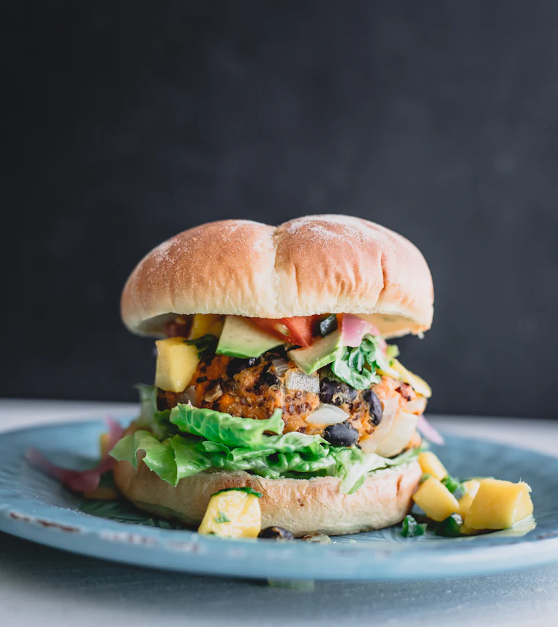
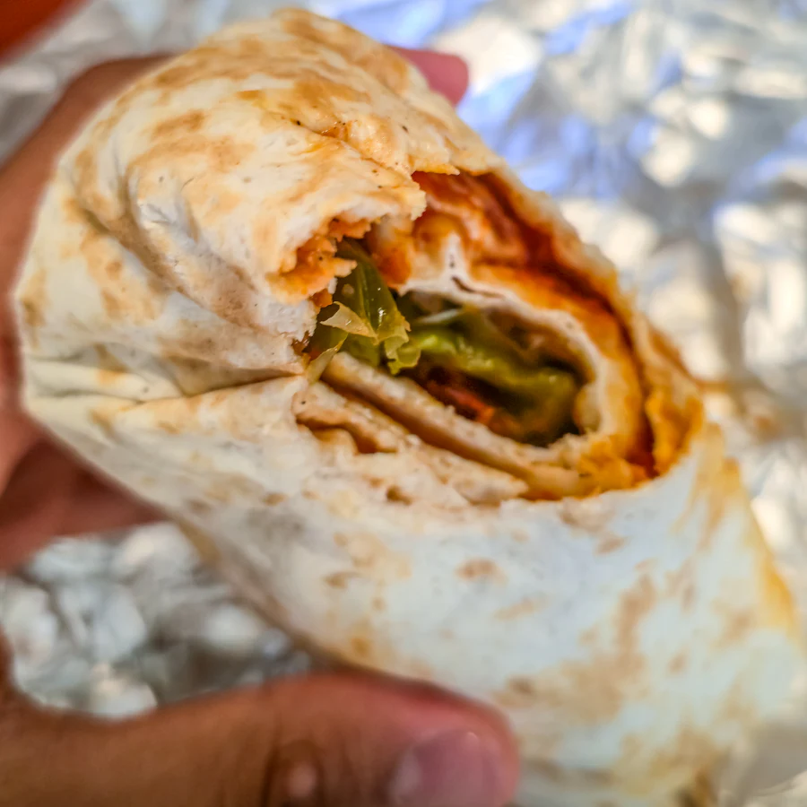
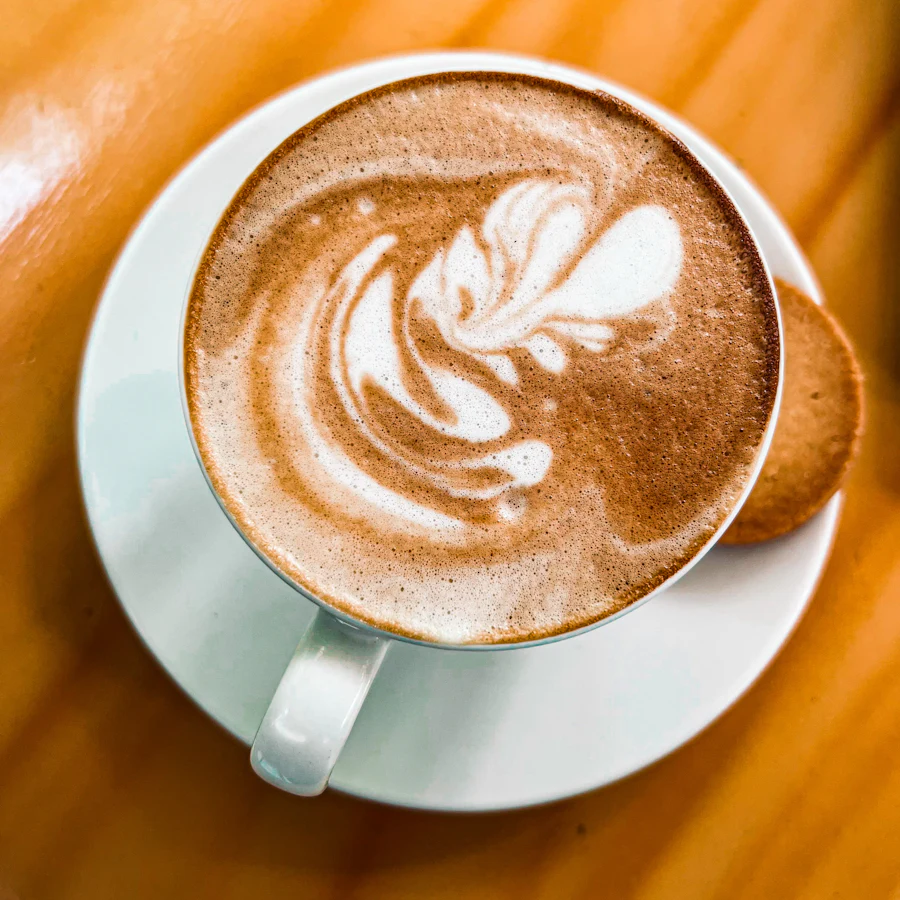
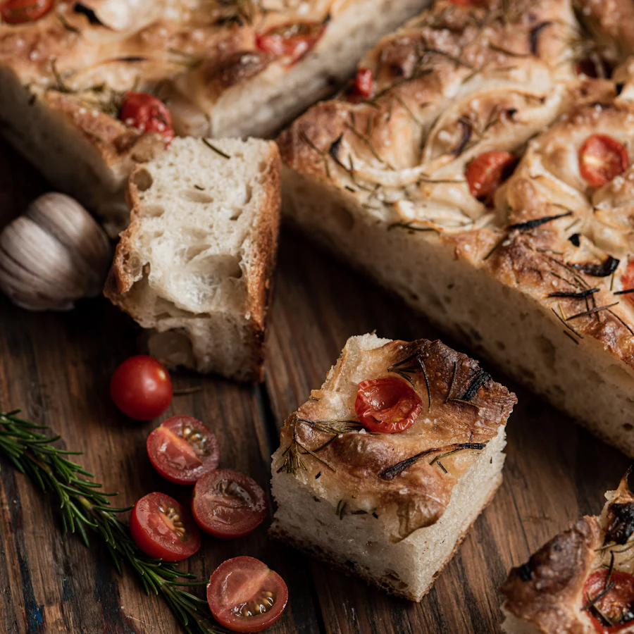

Rostlinná kavárna a bistro na Merhautově
Výběrová káva, domácí sladké i slané pečivo, focaccia sandwiche, burgery, wrapy a bowly. Vše připravujeme přímo u nás a stoprocentně rostlinné.
Po–pá 7:30–22 So 9–22 Ne 9–16


Seitan si vyrábíme sami
Natrháme ho a pak dlouze marinujeme zavakuovaný v marinádě z čerstvě namletého koření. Nejoblíbenější volba u nás je kebab.
Kebab 259 Kč
Cena z rozvozu.
Na kávu a k pultu s pečivem
Výběrová káva a domácí sladké i slané pečivo. V neděli běží jen kavárna a pekárna, kuchyně nevaří.


Otevírací doba
| Den | Otevřeno | Vaříme |
|---|---|---|
| Po–pá | 7:30–22 | 11–21 |
| Sobota | 9–22 | 11–21 |
| Neděle | 9–16 | nevaříme |
Ve svátky otevíráme 9:00–22:00. Zavřeno jen o vánočních svátcích, na Silvestra a na Nový rok.
Merhautova 44
Merhautova 449/44613 00 Brno-Zábrdovice
- Telefon
- +420 735 023 936
- kynobrno@gmail.com